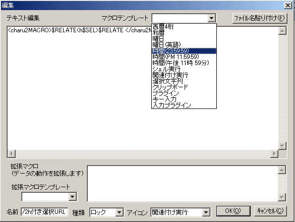

Charu3 is made so that a keyboard may be easy to use. Although, as for general operation, a mouse is also made, of course, if it uses with a sufficient feeling speedily, it will be a keyboard positively. In this chapter, the information for mastering the main screen of Charu3 and pop-up one comfortably is offered.
 Operation with a keyboard
Operation with a keyboard
In order to perform operation with a keyboard comfortably, Charu3 was made and is crowded.
|
Key operation
|
Action
|
| Up or Down | Movement of item selection. |
| Shift + Up or Down | It moves to the following folder. Between folders is jumped. |
| Left or Right | It jumps to a parent-and-child folder. Opening and closing. |
| Shift + Left | It flies to parents' folder most. |
| Space key | Item selection is moved downward. |
| Shift + Spacekey | Item selection is moved upwards. |
| TABkeyor Spacekey + Ctrl |
More than one become selection mode.It is the function in which two or more fixed form sentences can be stuck on the order which attached the check at once. |
| Enter | Determination. The selected item is stuck on a caret position. In the case of a folder, it opens and closes. |
| Shift + Enter | Determination. However, paste is not performed. The text chosen as the clip board is put in and it closes pop-up ones. A keyboard macro is not developed. |
| Delete key | The selected item is deleted. |
| Alt or App key | Text list menu popup. |
| F1 key | The contents of a selection item are displayed on a tool tip. |
| F2 key | The name of a selection item can be edited. |
| F3 key | The next item is searched (when reference conditions are specified). |
| ESC keyor Hot key |
Pop-up hot key A window is closed. |
| Alphabet A number, a sign key |
That whose title corresponds is chosen.For example, if A is pushed, the head of a title will choose the thing of A one after another. Moreover, if the following key is continued and pushed before decision (definite time can be set up), reference can be extracted further. This is a Quick accessing function. It attaches to the head of the title of data with "@a" etc., and is made "@a address", "@l link", and the title to say. And if it types with "@a" where a list is issued, it will fly to "@a address" by from 1. It flies to "@l link" by "@l." |
As for general operation, a mouse is also made although it is the software for keyboards.
|
Mouse operation
|
Action
|
| Left click | Selection of an item. |
| Right click | Menu display. |
| Double click | Determination. The selected item is stuck on a caret position. |
|
Cursor is united with data. |
The contents of the text item are displayed on a tool chip. |
| Drag and drop | With a mouse, the drug & drops of the item are carried out, and it is rearranged. |
| A frame is dragged. | The size of a window is changed. |
| The outside of a window is clicked. | A window is closed. |
There are four kinds of registration items. They are a folder, a history folder, a one time item, and a lock item.
Charu3 can manage registration data by the folder. The number of the data in a folder etc. does not have restriction.
 History Folder
History Folder 
It is the folder which takes the history of a clip board automatically. If it is a folder and confirms with a "property" "it uses as a history folder", it can use as a history folder. It can be set [ the number of the maximum histories, and ] up by writing an "extended broad view" whether a history is saved or it does not carry out. Please read explanation of an "extended broad view" for details.
 Onetime item
Onetime item
The text which went into the clip board at the time of stock mode is accumulated as a one time item. If this is stuck once, it will disappear.
 Lock item
Lock item
This is an ordinary fixed form sentence. The item added in the "text item addition" dialog turns into a lock item. A one time item can also be made into a lock item. Unlike a one time item, even if it carries out attachment what times, it does not disappear.
If it often sees, I will think that a red character can be seen at the upper right of an icon. As for this, the broad view is used for the contents of data. There are seven kinds in all.
D・・・・・Date
E・・・・・Shell
R・・・・・Execute Relation
S・・・・・Selected text
C・・・・・Clipboard
P・・・・・Plugin
K・・・・・Key emulat
 Popup menu
Popup menu

 Paste Check
Paste Check
複数貼り付けの為のチェックボックスを出します。チェックボックスはクリックすればチェックできます。
 データ追加
データ追加
新規
 プロパティ
プロパティ
データの内容を編集するウィンドウを開きます。マクロ、拡張マクロはテンプレートを用意してありますから、コンボボックスから選んで編集してください。
 検索
検索
データを検索できます。一度検索した後は、F3キーを押すと次の候補に飛びます。また、拡張マクロの内容も検索できますから、拡張マクロで設定したホットキーが判らなくなった時は、「Htokey」で検索すれば判ります。内容にチェックを入れれば拡張マクロ内も検索します。
 インポート
インポート
外部ファイルのデータをCharu3に取り込みます。取り込める形式はデータ互換プラグインに依存します。Charu3形式の場合はプラグイン無しでもインポート可能です。
 エクスポート
エクスポート
ポップアップで選択しているデータ(フォルダの場合はフォルダごと)を外部ファイルに書き出します。ただしこれはCharu3形式のみになります。オリジナルデータを配布したい場合などにどうぞ。
 フォルダをクリア
フォルダをクリア
選択しているフォルダ内のデータをクリアします。
 データをコピー&ペースト
データをコピー&ペースト
選択しているデータの複製を作れます。似たような感じなんだけど、ちょっと違うデータを複数作るときに便利です。
 データのプロパティ
データのプロパティ
各データの内容を編集できます。データ追加のダイアルログも殆ど使い方は同じです。下の例はデータの場合、フォルダの場合は「履歴フォルダとして使う」というチェックボックスがあります。

 名前
名前
データの名前を設定します。
 テキスト編集
テキスト編集
ここが貼り付ける定型文の本文です。マクロやキー入力マクロもここに記述します。
 マクロテンプレート
マクロテンプレート
マクロを全て自分で書くのは大変なので、テンプレートを用意しました。コンボボックスから選ぶと貼り付けられます。
 ファイル名貼り付け
ファイル名貼り付け
指定したファイルのフルパスを貼り付けることが出来ます。
 拡張マクロ
拡張マクロ
データの挙動を決めるマクロを記述できます。使えるマクロは、そのデータの種類によって変わります。
 拡張マクロテンプレート
拡張マクロテンプレート
拡張マクロのテンプレートです。自動的に使えるマクロだけが表示されます。選んだマクロが拡張マクロのボックスに貼り付けられます。
 種類、アイコン
種類、アイコン
データの種類と表示に使うアイコンを設定できます。普通は変えなくても良いと思いますけど。